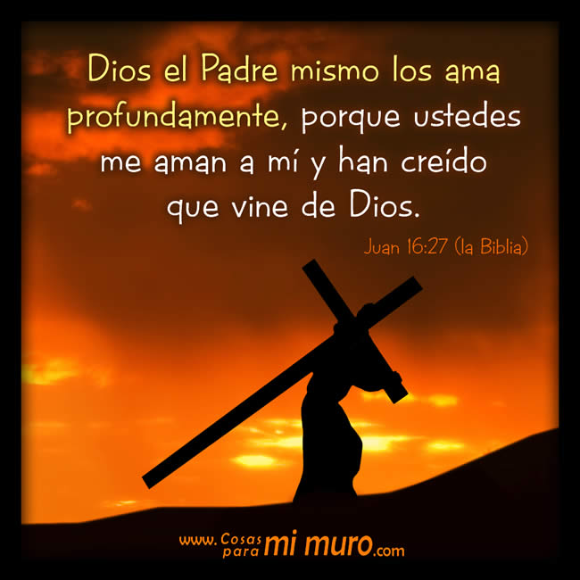
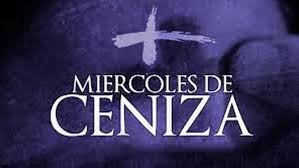
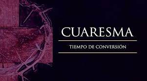
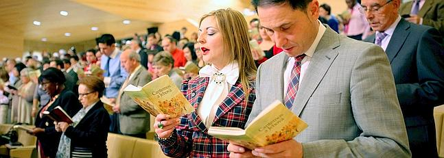
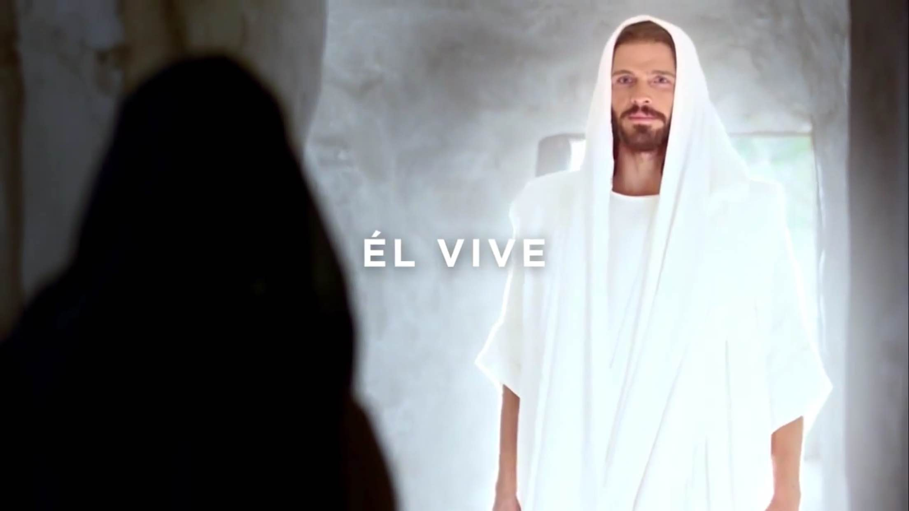
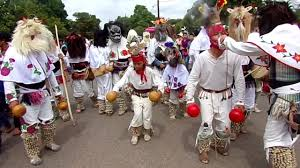
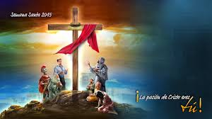

Para vivir la Semana Santa, debemos darle a Dios el primer lugar y participar en toda la riqueza de las celebraciones propias de este tiempo litúrgico.
A la Semana Santa se le llamaba en un principio “La Gran Semana”. Ahora se le llama Semana Santa o Semana Mayor y a sus días se les dice días santos. Esta semana comienza con el Domingo de Ramos y termina con el Domingo de Pascua.
"En el misterio pascual, Dios Padre, por medio del Hijo en el Espíritu Paráclito, se ha inclinado sobre cada hombre ofreciéndole la posibilidad de la redención del pecado y la liberación de la muerte". (Juan Pablo II)
El peso de la cruz de Cristo nos libera de todas nuestras cargas.
Humillarse es ante todo el estilo de Dios: Dios se humilla para caminar con su pueblo, para soportar sus infidelidades.
En el año ocurren 2 equinoccios en cada hemisferio, en marzo y en septiembre.
Así que para determinar la fecha de la Semana Santa, tenemos claro que el equinoccio de Primavera en el Hemisfero Norte ocurre entre el 20 y el 21 de marzo. Ahora debemos saber cuando cae luna llena.
Todos los años se determina el calendario lunar, lo que nos permite saber cuando cae luna llena después del 21 de marzo. Revisemos el calendario lunar para marzo de este año y podemos ver:
Este día recordamos la Última Cena de Jesús con sus apóstoles en la que les lavó los pies dándonos un ejemplo de servicialidad. En la Última Cena, Jesús se quedó con nosotros en el pan y en el vino, nos dejó su cuerpo y su sangre. Es el jueves santo cuando instituyó la Eucaristía y el Sacerdocio. Al terminar la última cena, Jesús se fue a orar, al Huerto de los Olivos. Ahí pasó toda la noche y después de mucho tiempo de oración, llegaron a aprehenderlo.

Ese día recordamos la Pasión de Nuestro Señor: Su prisión, los interrogatorios de Herodes y Pilato; la flagelación, la coronación de espinas y la crucifixión. Lo conmemoramos con un Via Crucis solemne y con la ceremonia de la Adoración de la Cruz.
Se recuerda el día que pasó entre la muerte y la Resurrección de Jesús. Es un día de luto y tristeza pues no tenemos a Jesús entre nosotros. Las imágenes se cubren y los sagrarios están abiertos. Por la noche se lleva a cabo una vigilia pascual para celebrar la Resurrección de Jesús. Vigilia quiere decir “ la tarde y noche anteriores a una fiesta.”. En esta celebración se acostumbra bendecir el agua y encender las velas en señal de la Resurrección de Cristo, la gran fiesta de los católicos.
Es el día más importante y más alegre para todos nosotros, los católicos, ya que Jesús venció a la muerte y nos dio la vida. Esto quiere decir que Cristo nos da la oportunidad de salvarnos, de entrar al Cielo y vivir siempre felices en compañía de Dios. Pascua es el paso de la muerte a la vida.
El Vía Crucis de Atlixco, reúne desde hace más de un siglo en Semana Santa a un grupo de penitentes capaces de traspasar el umbral del dolor por su devoción, al salir en procesión encapuchados y descalzos, con grilletes y coronas de espinas.
Por sexto año consecutivo, un tapete monumental de flores fue inaugurado en el zócalo de Atlixco como parte de los atractivos para Semana Santa, tiempo en el que el municipio espera recibir 74 mil visitantes.
Atlixco acoge su dolorosa Procesión de los Engrillados
En las calles de atlixco por donde pasa la procesión realizan grandes alfombras elaboradas de acerrín
Artesanías de palma, una tradición que perdura en Semana Santa
La Cuaresma es el tiempo litúrgico de conversión, que marca la Iglesia para prepararnos a la gran fiesta de la Pascua. Es tiempo para arrepentirnos de nuestros pecados y de cambiar algo de nosotros para ser mejores y poder vivir más cerca de Cristo.
La Cuaresma dura 40 días; comienza el Miércoles de Ceniza y termina antes de la Misa de la Cena del Señor del Jueves Santo. A lo largo de este tiempo, sobre todo en la liturgia del domingo, hacemos un esfuerzo por recuperar el ritmo y estilo de verdaderos creyentes que debemos vivir como hijos de Dios.

El color litúrgico de este tiempo es el morado que significa luto y penitencia. Es un tiempo de reflexión, de penitencia, de conversión espiritual; tiempo de preparación al misterio pascual.
En la Cuaresma, Cristo nos invita a cambiar de vida. La Iglesia nos invita a vivir la Cuaresma como un camino hacia Jesucristo, escuchando la Palabra de Dios, orando, compartiendo con el prójimo y haciendo obras buenas. Nos invita a vivir una serie de actitudes cristianas que nos ayudan a parecernos más a Jesucristo, ya que por acción de nuestro pecado, nos alejamos más de Dios.
Para los testigos de Jehová la Semana Santa comienza el 14 de abril, o 14 de Nisán, y comprende desde la puesta de sol hasta la próxima. De acuerdo con su tradición, la única acción que Jesús mandó a conmemorar en esta fecha es la última cena; por esto, la comunidad se reúne en el Salón del Reino para recordar esta acción, reflexionar sobre ella y el significado de la muerte y resurrección de Jesús, como rey mas no como Dios todopoderoso. En esta ceremonia, al igual que lo hizo Jesús, se reparte el pan y el vino, pero no todos son elegidos de participar de esta cena, pues este honor depende de los méritos de cada persona.
La Semana Santa de los mormónes inicia desde el Lunes Santo, y como suelen hacer muy habitualmente durante muchas semanas del año, se reúnen en lo que llaman la “noche del hogar” para recordar pasajes de la Biblia protestante y, sobre todo, de sus libros sagrados. Son momentos de estar en familia, de compartir, y recordar cómo Jesús, que era un hombre según ellos, sólo un hombre, se hizo Dios también, otro dios, por sus propias fuerzas y comportamiento, según ellos afirman, y esto mismo es lo que ellos también quieren hacer, convertirse en dioses y regentar el gobierno de algunos sistemas solares del universo. En general, a pesar de sus diferencias de doctrina, es importante considerar que estos días no son el único momento para adorar a Dios y hallar comunión consigo mismo. Sumado a eso, las actividades en la familia también contribuyen a nutrir el alma. Por lo tanto, esta Semana Santa… ¡Ama, agradece y vive en paz
Que no creen en Jesús como su Salvador, celebran el matza, una cena que consiste en hierbas con sabor amargo y pan sin levadura (ácimo) en forma de galleta. El sabor amargo recuerda la esclavitud que vivió el pueblo de Israel ante los egipcios; y el pan sin levadura, según las escrituras bíblicas, simboliza la humildad de esta comunidad.
En el sentir de los adventistas, la Semana Santa es la conmemoración de la pasión de Cristo; sin embargo, los seis días los trabajan normalmente, además, no tienen prohibición para ingerir alimentos, aunque tienden a ser vegetarianos
